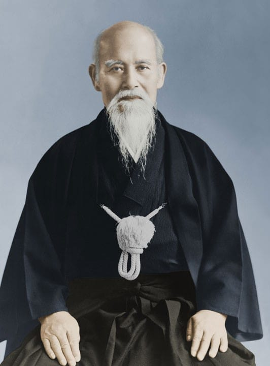

Kiel Aiki Shuren Dojo
Aiki Shuren Dojo
Kiel Aiki Shuren Dojo
Aiki Shuren Dojo

"So wie eine Landschaft sich desto mehr dem Blick öffnet, je höher man steigt."
Morihei Ueshiba - "O-Sensei"
Aikido basiert auf natürlichen und logischen Bewegungen. Es ist eine Kampfkunst, die von Menschen jeden Geschlechts und Alters mit gleicher Wirkung ausgeübt werden kann.
Das Training ist sehr fordernd, aber eine nicht wettbewerbsorientierte und eine nicht aggressive Haltung während der Übungen sorgen für eine sehr angenehme Atmosphäre während des Trainings. Aikido bereichert das Leben dadurch auf vielen Leben.
Das Kiel-Aiki-Shuren-Dojo nimmt das ganze Jahr über neue Mitglieder auf. Anfänger sind in allen Grundkursen willkommen.
Das Training beginnt mit Aufwärmübungen, Roll- und Falltraining ( Ukemi ), Dehnübungen und Üben von Grundtechniken. Für Anfänger ist keine besondere Trainingskleidung erforderlich. Trainiert werden kann mit jedem Trainingsanzug oder anderer legerer Sportkleidung. Für das weitere Training wird ein einfacher Judoanzug ( Keikogi ) getragen.